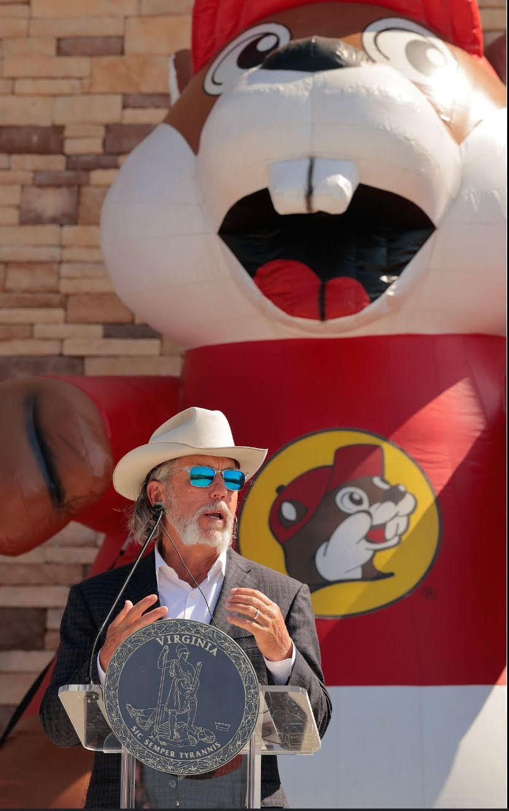

*Back to school be the welcome, my dear monkeys!
Beaver filter still functional! Have introduced new members to Prodrop, and am glad to announce that are already on path to meyeny and monkeydom.
Prodrimsy is prodrop whimsy.
Legend of mad executioner, written by our meyest Audrey, is complete!! Is attached to this email.
Buc-ee’s’ CEO BEAVER!!!! By extension, Texas A&M BEAVERFUL!!! Evidence attached as image to this email.
Gorp siege when?

Continuel all to work on j’abandoned Prodrop projectve,
Hussein
Legend of the Mad Executioner: